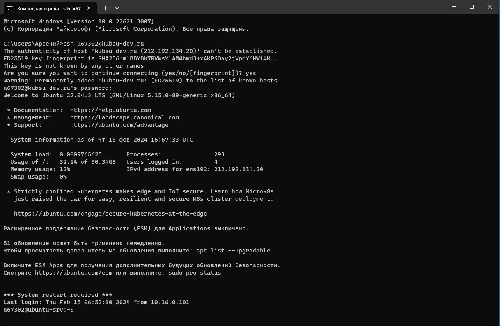
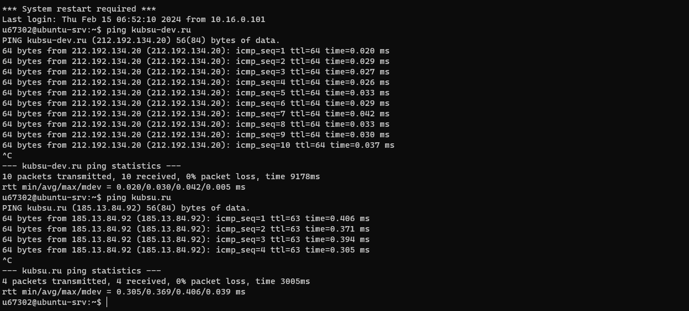
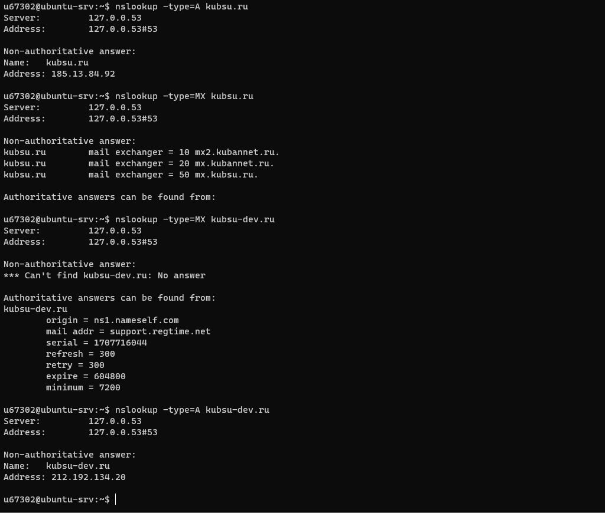
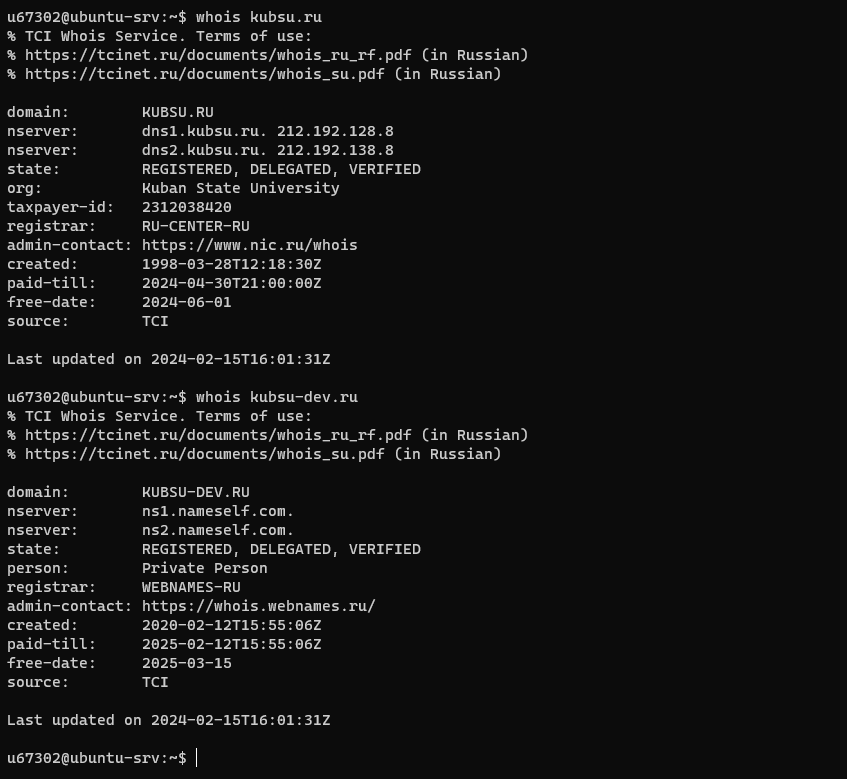
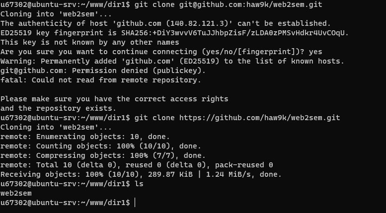
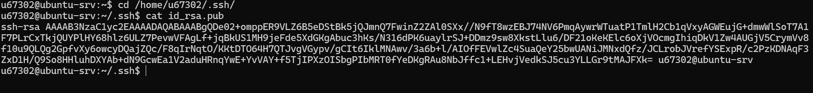

- подключение к учебному серверу kubsu-dev.ru через ssh команду
- С помощью команды ping на учебном сервере узнать IP-адрес веб-сервера kubsu.ru
- С помощью команды nslookup узнать A-записи и MX-записи домена kubsu.ru и kubsu-dev.ru
- С помощью команды whois узнать дату регистрации домена kubsu.ru и kubsu-dev.ru
- с помощью SSH склонировать репозитарий со скриншотами и страницей в каталог www
- С помощью программы FileZilla или любого другого клиента SFTP соединиться с учебным сервером с вашим логином и паролем по протоколу SFTP и скопировать налокальный компьютер файлы задания из каталога www.